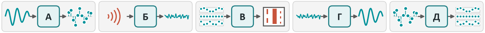
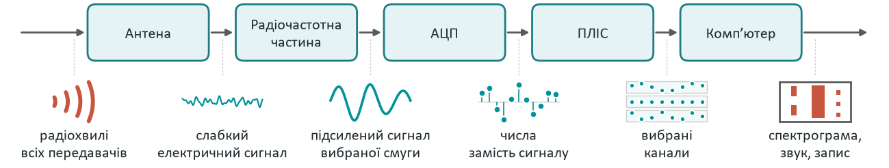

Тема 3. Будова приймача РЕР
Тут зібрано все для практичної частини теми: вправа з блоками приймача, відповіді до якої можна перевірити просто на цій сторінці, аркуш для друку, схема до завдання 2, інструкції до завдань 3 і 4, модель антенної решітки й відповіді.
Вправа № 1. Простежте сигнал у приймачі
Пост П1 приймає передачу радіостанції Д2 на частоті 300 МГц спрямованою антеною. На рис. 3.7 блоки його приймача показано без назв і не за порядком. Ліворуч від блока намальовано те, що до нього надходить, праворуч те, що з нього виходить. Працюйте в парі.

- Назвіть блоки А, Б, В, Г і Д. Розташуйте їх за порядком, від антени до екрана.
- Запишіть, що переходить від блока до блока. Обчисліть довжину радіохвилі за правилом із теми 2 і довжину півхвильового диполя для неї.
- Назвіть блок, що спричинив кожну з трьох несправностей. Перша: після сильного вітру сигнал радіостанції зник, зате з’явилися сигнали з іншого боку. Друга: поруч запрацював потужний передавач, сигнал радіостанції спотворився, а на спектрограмі з’явилися сигнали, яких в ефірі немає. Третя: спектрограма працює, але запис ефіру обірвався на 40-й секунді. Перед записом на диску було вільно 4 ГБ.
- Тепер пост має прийняти сигнал пульта керування безпілотником на частоті близько 2440 МГц. Які блоки треба замінити, які налаштувати по-новому (змінити налаштування чи програму), а які залишити без змін? Обчисліть довжину диполя для цього сигналу.
Перевірте себе
Для кожного блока оберіть назву, місце за порядком і те, що з ним зробити в кроці 4. Нижче оберіть відповіді до кроків 2, 3 і 4 й натисніть «Перевірити». Що переходить від блока до блока, запишіть на аркуші або в зошиті: сторінка цього не перевіряє. Кнопка «Показати пояснення» відкриває відповіді до всіх кроків.
Аркуш для друку
Аркуш до вправи № 1 і завдання 2 (файл PDF, дві сторінки формату А4). На першій сторінці текст вправи, рис. 3.7, збільшений в 1,5 раза, і таблиця для відповідей. На другій завдання 2: схема приймача і таблиця, у якій блокам рис. 3.2 добирають блоки схеми.
Схема до завдання 2
GNU Radio — це безкоштовна програма, у якій приймач складають із готових блоків. На сторінці теми й на аркуші є схема приймача радіомовних станцій із частотною модуляцією (FM). Знайдіть на схемі блоки, що виконують роботу блоків рис. 3.2. Яких блоків рис. 3.2 на ній немає? Чому?

Як читати схему. Сигнал іде за стрілками, зліва направо. Назви блоків англійські: так їх пише програма. Біля кожного блока написано, що він робить. Порівняйте схему з рис. 3.2: для кожного з п’яти його блоків знайдіть блоки схеми, які виконують ту саму роботу.

Інструкція до завдання 3: FM-приймач у GNU Radio
Потрібен комп’ютер із програмою GNU Radio. За інструкцією на сторінці теми складіть приймач із завдання 2 і прослухайте запис ефіру (модель). Скільки станцій у записі? Що передає кожна?
Запис ефіру: tema-3-zapys.iq. Це модель: числа запису обчислено, а не прийнято з ефіру. Запис триває 4 с. За секунду в ньому 720 000 відліків, і кожен відлік складається з двох чисел, по байту на число: 720 000 · 2 · 4 = 5 760 000 байтів, тобто 5,76 МБ.
Інструкцію складено за файлами програми GNU Radio. У самій програмі інструкцію ще не перевірено.
Як встановити програму
GNU Radio входить до набору програм radioconda. Його інсталятори лежать на сторінці radioconda-installer. Для Windows завантажте файл, назва якого закінчується на Windows-x86_64.exe. Для комп’ютера Mac завантажте файл MacOSX-arm64.pkg (процесор Apple) або MacOSX-x86_64.pkg (процесор Intel). Завантажений файл двічі клацніть. Для Linux завантажте файл Linux-x86_64.sh і виконайте в терміналі команду bash з назвою цього файлу.
Програма, у якій складають схеми, називається GNU Radio Companion. У Windows відкрийте в меню «Пуск» теку radioconda і запустіть GNU Radio Companion. Якщо такого ярлика немає, запустіть там само radioconda Prompt і введіть команду gnuradio-companion. У macOS і Linux відкрийте термінал і введіть дві команди: conda activate base, а потім gnuradio-companion.
Як скласти приймач
- У новій схемі вже стоять блок Options і змінна
samp_rate. Двічі клацніть змінну і впишіть у поле Value число720000: стільки відліків за секунду містить запис. Вікно параметрів закриває кнопка OK. - Додайте шість блоків схеми. Натисніть Ctrl+F, введіть назву блока і натисніть Enter. Блок можна знайти й у списку праворуч і додати подвійним клацанням.
- Двічі клацніть кожен блок і задайте його параметри:
- File Source. File:
tema-3-zapys.iq; Output Type:byte; Repeat:Yes. - IChar To Complex. Параметрів не змінюйте.
- Frequency Xlating FIR Filter. Type:
Complex->Complex (Real Taps); Decimation:3; Taps:firdes.low_pass(1, samp_rate, 100e3, 40e3); Center Frequency:0. - WBFM Receive. Quadrature Rate:
240000; Audio Decimation:5. - Audio Sink. Sample Rate:
48 kHz. - QT GUI Frequency Sink. Параметрів не змінюйте.
- File Source. File:
- З’єднайте блоки, як на схемі: клацніть вихід одного блока, а потім вхід наступного. Вихід блока IChar To Complex з’єднайте з двома блоками.
- Збережіть схему: Ctrl+S. Зробіть звук комп’ютера тихішим, бо звуки запису гучні, і запустіть схему клавішею F6. Зупиняє схему клавіша F7.
- Ви почуєте одну станцію, а у вікні побачите спектр усієї смуги запису. Кожен горб на спектрі показує одну станцію. Прочитайте на осі частоту іншого горба, зупиніть схему і впишіть цю частоту в параметр Center Frequency: приймач перейде на іншу станцію. Частоту вписують у герцах: 150 кГц записують як
150e3, а −150 кГц як-150e3.
Звідки взято числа параметрів. Блок Frequency Xlating FIR Filter залишає кожен третій відлік: 720 000 / 3 = 240 000 відліків за секунду. Блок WBFM Receive видає одне значення звуку на кожні 5 відліків: 240 000 / 5 = 48 000 значень за секунду. Таку швидкість звуку пропонує блок Audio Sink: у його списку вона записана як 48 kHz. У параметрі Taps записано фільтр, який пропускає одну станцію: числа 100e3 і 40e3 задають його ширину в герцах.
Інструкція до завдання 4: півхвильовий диполь
Потрібні дріт і лінійка. Розрахуйте півхвильовий диполь для радіомовної станції вашого міста: два відрізки дроту, кожен завдовжки чверть довжини хвилі. Виготовте його за інструкцією на сторінці теми. Без інструментів: змінюйте на сторінці теми кількість елементів решітки та затримку між ними. Що робить промінь вужчим? Що його повертає? Підготуйте короткий звіт із фото або рисунком.

Потрібен приймач з антенним гніздом: наприклад, музичний центр або USB-приймач, як у вступі до теми (такі приймачі називають RTL-SDR).
- Дізнайтеся частоту станції в мегагерцах: її показує приймач.
- Обчисліть довжину хвилі за правилом із теми 2: 300 поділіть на частоту в мегагерцах. Для станції на частоті 100 МГц: 300 / 100 = 3 м. Кожен відрізок дроту має чверть цієї довжини: 3 / 4 = 0,75 м, тобто 75 см.
- Відріжте два відрізки дроту обчисленої довжини.
- Закріпіть обидва відрізки на одній прямій, наприклад на дерев’яній рейці, так щоб їхні ближні кінці були поруч, але не торкалися один одного. Замість рейки можна взяти тримач, надрукований на 3D-принтері.
- До ближніх кінців приєднайте кабель від антенного гнізда приймача: один його провідник до одного відрізка, другий до другого. У телевізійному кабелі це центральна жила й обплетення.
- Увімкніть станцію і повертайте антену. Диполь найкраще приймає з напрямків упоперек дроту, а найгірше вздовж нього.
- Запишіть, у якому положенні прийом найкращий. Для звіту сфотографуйте або намалюйте антену.
Справжній диполь роблять трохи коротшим, ніж половина довжини хвилі. Для прийому така точність не головна: диполь приймає і на сусідніх частотах.
Безпека. Антену під’єднуйте лише до антенного гнізда приймача. Не торкайтеся дротом розеток та електропроводки. Не виносьте антену надвір під час грози.
Модель антенної решітки
Це модель фазованої антенної решітки з рис. 3.5, в і г. Її елементи стоять в один ряд, на відстані половини довжини хвилі один від одного. Кожен елемент приймає лише спереду: найкраще прямо перед собою, а збоку слабше.
Решітка затримує сигнал кожного елемента на свій час і лише потім додає сигнали. Сигнал кожного наступного елемента вона затримує на однаковий час довше: це затримка між сусідніми елементами. Затримку задано в частках періоду. Періодом називають час одного коливання хвилі.
Оберіть кількість елементів, затримку і напрямок на передавач. Чотири рисунки показують, як решітка приймає хвилю цього передавача.
Модель працює, коли в браузері ввімкнено JavaScript.
Промінь повернуто на 29° праворуч. Ширина променя 14°.
Як читати рисунки
- Рисунок 1 показує решітку згори в ту мить, коли хвиля дійшла до елемента, найближчого до передавача. Червоні лінії позначають гребені хвилі: місця, де хвиля в цю мить найсильніша. Найтовща лінія позначає перший гребінь. Передавач стоїть далеко, тому біля решітки гребені прямі. Стрілка показує, куди хвиля рухається. Пунктир від елемента показує шлях, який першому гребеню ще треба пройти до цього елемента.
- На рисунках 2 і 3 кожен рядок показує сигнал одного елемента, а час іде зліва направо. Номер елемента стоїть на початку рядка. Штрихові лінії з’єднують гребені сигналів: миті, коли сигнал найбільший. Якщо ці лінії похилі, сигнали приходять у різний час і сума менша за найбільшу можливу. Якщо лінії прямовисні, сигнали збігаються і сума найбільша.
- На рисунку 3 після номера елемента стоїть затримка його сигналу в періодах. Пунктир на початку рядка показує цю затримку: сигнал починається пізніше. Цілих періодів пунктир не показує: коливання повторюється, тож затримка на цілий період нічого не змінює. Тому важить лише частка періоду. Затримку на частку періоду називають зсувом фази: звідси назва фазованої решітки.
- Дві штрихові лінії в рядку суми показують найбільшу можливу суму. Таку суму дають сигнали, які всі збігаються.
- На рисунку 4 крива показує, наскільки добре решітка приймає з кожного напрямку: що далі крива від решітки, то краще. Найкращий напрямок завжди сягає півкола, тому за різних налаштувань порівнюйте лише форму кривих. Малі пелюстки біля решітки показують напрямки, з яких вона теж трохи приймає. Дві штрихові лінії показують краї променя: напрямки, з яких решітка приймає половину потужності найкращого напрямку. Кут між краями називають шириною променя.
- Суцільна червона лінія на рисунку 4 показує напрямок на передавач, а точка на ній показує, наскільки добре решітка його чує. Навіть коли сигнали передавача збігаються, промінь може стояти трохи ближче до напрямку прямо, ніж передавач. Причина: кожен елемент приймає збоку слабше, ніж прямо перед собою. Що менше елементів у решітці, то більша ця різниця.
Запитання до моделі
- Передавач переїхав: тепер він стоїть на 30° ліворуч. Пересуньте його туди. Що сталося із сумою сигналів? Доберіть затримку, за якої сума знову найбільша.
- Не змінюйте знайденої затримки. Другий передавач працює на тій самій частоті й стоїть на 30° праворуч. Чи чує його решітка?
Відповіді наведено на сторінці відповідей.
Чому всі канали слухають одночасно

Обидва приймачі стежать за смугою з 8 каналів, у якій за той самий час з’являється 10 коротких передач. Перший приймач слухає канали по черзі й за цей час двічі обходить усю смугу. Він спіймав 3 передачі з 10: решта пролунали в каналах, яких він у ту мить не слухав. Другий приймач слухає всі канали одночасно, як ПЛІС, і спіймав усі 10.
Відповіді
Відповіді до вправи, контрольних запитань і завдань теми. Спершу виконайте вправу самі.
Публікації, з яких узято дані сторінки
- GNU Radio. Репозиторій програми GNU Radio на сайті GitHub, англійською мовою. З файлів програми взято назви блоків схеми, назви їхніх параметрів і клавіші, якими схему зберігають, запускають і зупиняють.
- radioconda-installer. Сторінка проєкту radioconda на сайті GitHub, англійською мовою. З неї завантажують інсталятори набору програм, до якого входить GNU Radio.
- Antenna Basics. Публікація компанії Rohde & Schwarz про основи антен, 2015 р., англійською мовою. З неї взято відомості про півхвильовий диполь і про те, як вимірюють ширину променя антени.
- About RTL-SDR. Сторінка сайту RTL-SDR.com, англійською мовою. Розповідає про USB-приймач зі вступу до теми: його називають RTL-SDR, бо він походить від телевізійних приймачів на мікросхемі RTL2832U.